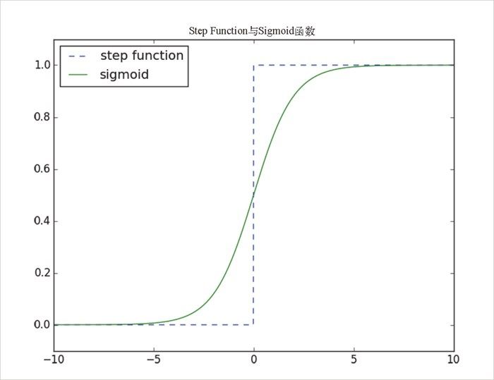

你可能还记得，我们在第 16 章也用过 sigmoid 函数，只不过当时我们称其为 logistic 函数。实际上，“sigmoid”指的是函数的外形，而“logistic”指的是这种特定的函数，但是人们经常将两者等价使用。
你可能还记得，我们在第 16 章也用过 sigmoid 函数，只不过当时我们称其为 logistic 函数。实际上，“sigmoid”指的是函数的外形，而“logistic”指的是这种特定的函数，但是人们经常将两者等价使用。18.2 前馈神经网络
大脑的拓扑结构极为复杂，我们可以近似地把它看作一个理想化的前馈 （feed-forward）神经网络，该网络由多层构成，每层由众多神经元组成，然后逐层相连。一般情况下，前馈神经网络会有一个输入层（接收输入信号，然后无需修改直接向前馈送），一个或者多个“隐藏层”（每层都是由神经元组成，这些神经元以前一层的输出作为其输入，进行某些计算，并将结果传递给下一层），以及一个输出层（这一层提供最终输出）。
正如感知器那样，每个（非输入）神经元的每个输入和偏移项都会有一个权重。为简单起见，我们将偏移项放到权重向量的末尾，并且所有神经元的偏移项的输入都是 1。
类似感知器那样，对于每个神经元而言，其输入与权重之积需要加总处理。不同之处在于，这里不是直接输出 step_function 函数应用于输入与权重之积的结果，而是将其平滑处理之后，输出一个近似值。准确地说，这里使用的是 sigmoid 函数，见图 18-2。
def sigmoid(t):
return 1 / (1 + math.exp(-t))

图 18-2：sigmoid 函数
为什么使用 sigmoid 函数，而不是更为简单的 step_function 函数呢？因为要训练神经网络，就得使用微积分，而要使用微积分，就得使用光滑函数。我们知道，阶梯函数无法确保处处连续，但是 sigmoid 函数却是它们一个非常好的平滑近似函数。
这样，我们就能计算其输出了，代码如下所示：
def neuron_output(weights, inputs):
return sigmoid(dot(weights, inputs))
有了这个函数，我们就可以将神经元简单表示成一个权重列表，列表的长度等于神经元输入数量加 1，因为还要加上偏移项的权重。这样，神经网络就可以用各个（非输入）层组成的列表来表示，其中每一层就是该层内的神经元所组成的一个列表。
也就是说，神经网络可以用（权重）列表的（神经元）列表的（层）列表来表示。
有了这种表示方法，神经网络用起来就会非常简便：
def feed_forward(neural_network, input_vector):
"""takes in a neural network
(represented as a list of lists of lists of weights)
and returns the output from forward-propagating the input"""
outputs = []
# 每次处理一层
for layer in neural_network:
input_with_bias = input_vector + [1] # 增加一个偏倚输入
output = [neuron_output(neuron, input_with_bias) # 计算输出
for neuron in layer] # 每一个神经元
outputs.append(output) # 记住它
# 然后下一层的输入就是这一层的输出
input_vector = output
return outputs
如今，我们无需使用感知器就能建立异或门了，这样事情就变得简单多了。所以，我们只需要调整权重，就能使得 neuron_outputs 非常接近 1 或 0 了：
xor_network = [# hidden layer
[[20, 20, -30], # 'and'神经元
[20, 20, -10]], # 'or'神经元
# output layer
[[-60, 60, -30]]] # '第二次输入不同于第一次输入'神经元
for x in [0, 1]:
for y in [0, 1]:
# feed_forward生成每个神经元的输出
# feed_forward[-1]是输出层神经元的输出
print x, y, feed_forward(xor_network,[x, y])[-1]
# 0 0 [9.38314668300676e-14]
# 0 1 [0.9999999999999059]
# 1 0 [0.9999999999999059]
# 1 1 [9.383146683006828e-14]
借助于隐藏层，我们就能把一个“与”神经元和一个“或”神经元的输出馈送至“第一个输入不同于第二个输入”神经元了。这个网络所做的工作，就是判断“或运算的结果不同于与运算的结果”，这实际上就是在执行异或运算，见图 18-3。

图 18-3：用于实现异或运算的神经网络